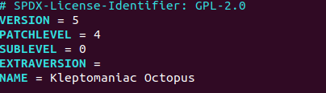
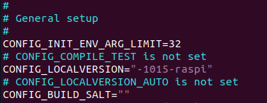
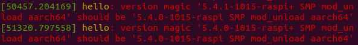
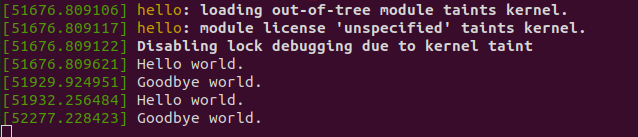

重新起用树莓派, 为方便起见, 还是将树莓派刷上 ubuntu 20.04.
安装编译工具链
sudo apt-get install gcc-aarch64-linux-gnu g++-aarch64-linux-gnu
之后用 aarch64-linux-gnu-* 编译代码, 生成的文件拷到树莓派使用.
下载源码
git clone git://kernel.ubuntu.com/kernel-ppa/mirror/ubuntu-raspi-focal.git
git checkout Ubuntu-raspi-5.4.0-1015.15
export CROSS_COMPILE=aarch64-linux-gnu-
export ARCH=arm64
将 pi 的配置文件拷到编译目录
scp root@pi:/boot/config-5.4.0-1015-raspi .config
更新配置, 将来自 pi 的 config 与 pi 当前发行版源码的 config 进行校对并更新, 生成新的 .config
make oldconfig
执行 make 编译所有东西, 但我主要关注的是自定义模块
编译一个 demo
make KERNEL=/home/this/ubuntu-raspi-focal
编译出来的 hello.ko 在 pi 上有版本不匹配的问题
[48134.583658] hello: version magic '5.4.44 SMP mod_unload aarch64' should be '5.4.0-1015-raspi SMP mod_unload aarch64'
解决方法：
步骤 1：编辑 Makefile

步骤 2： 编辑 .config

步骤 3：在源码根目录创建空白文件 touch .scmversion, 否则因为源码有修改而造成版本号出现一个 + 后缀, 为什么会这样, 暂时找不到资料. 也可以改 include/generated/utsrelease.h, 但可以看出, 这个文件是生成的.

创建 .scmversion 后问题解决：
